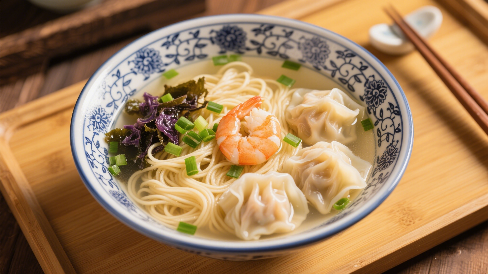
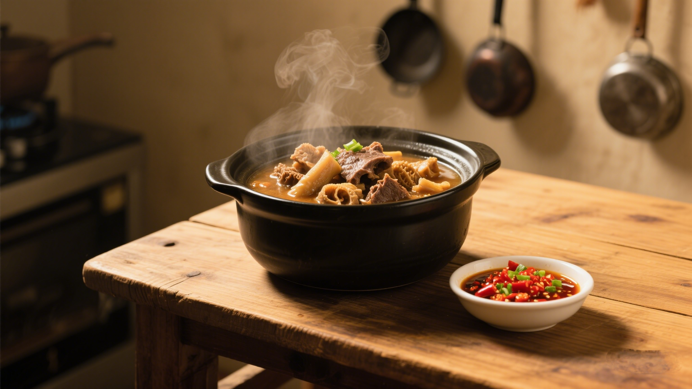
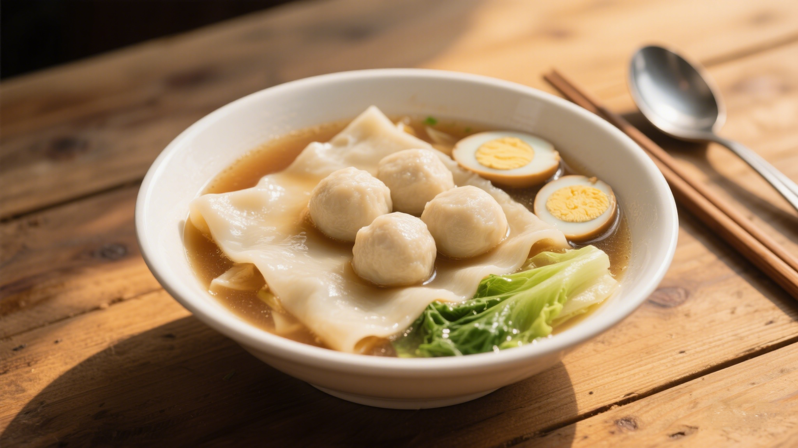
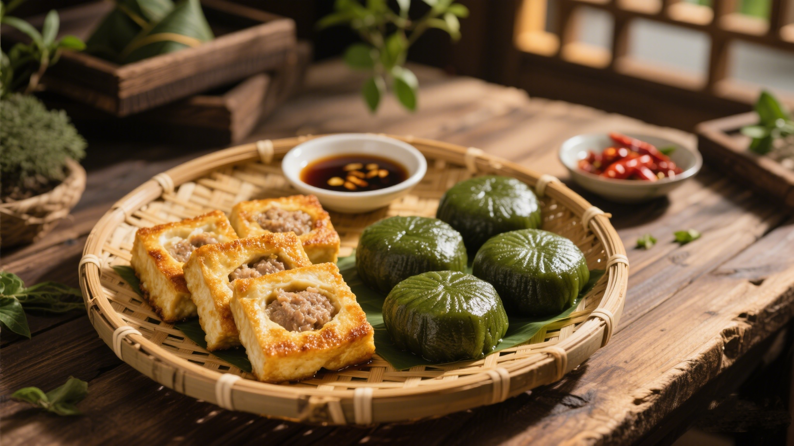

🍢 经典传承：藏在摊档里的百年老味道

广府代表
云吞面：一碗汤里的“鲜”功夫
云吞面是广府街头的“国民早餐”，百年历史可追溯至清末。竹升面用大茅竹压打面团，筋道弹牙；云吞以鲜虾仁、猪后腿肉为主馅，皮薄如纸；汤底用大地鱼干+猪骨熬足8小时，清而不寡。
老广们常说“食云吞面要起早”——清晨的摊档前，老板“笃笃”的竹升打面声，与食客“嗦面”的声响交织，构成最鲜活的市井乐章。

市井王者
牛杂：边角料里的“鲜”智慧
上世纪初，屠户将牛肠、牛肚等边角料以铜锅慢煮，加入八角、草果等香料去膻提鲜，成就了“牛杂”这道平民美食。瓦煲里咕嘟冒泡的牛杂，配支竹签边逛边吃，是老广记忆里的“移动食堂”。
地道吃法讲究“蘸汁”——甜酱提香、辣酱激味、蒜汁解腻，一碗牛杂能吃出十几种层次。
🌍 地域特色：三大民系的风味密码

潮汕风味
鱼丸·粿汁：海味与古早的碰撞
潮汕靠海，街头小吃多与海鲜结缘：手捶牛肉丸用铁棒反复捶打2小时，煮时能弹起乒乓球；鱼丸选马鲛鱼去骨取肉，Q弹中带着海的鲜甜。
而“粿汁”则保留中原古俗——米浆蒸制的粿皮切条，浇上卤汁，配猪肠、豆干，是潮汕阿公阿嬷的“早餐标配”。

客家巧思
酿豆腐·艾粄：山民的“物尽其用”
客家山居少水产，便用豆腐“酿”出花样——将鱼肉剁馅塞入豆腐中煎制，外焦里嫩；艾粄取清明前后的艾草，与糯米粉混合包裹甜馅，既是节令美食，也是乡愁的味道。
街头的客家小吃摊常挂着“现做现卖”的招牌，阿婆揉面、阿公生火的画面，比小吃本身更有温度。
✨ 市井文化：摊档里的生活哲学
🍜 平民的“米其林”
5元一碗的牛三星汤、3元一串的糖不甩，广东街头小吃用最低的门槛，让“美食自由”触手可及。
👵 手作的温度
从阿婆现包的云吞到大叔现炸的油角，手工制作的“不标准”，恰恰是街头小吃最动人的“标准”。
🌆 烟火的仪式
早茶后的牛杂摊、夜宵前的糖水铺，小吃摊是广东人生活的“时间刻度”，记录着日常的温暖。